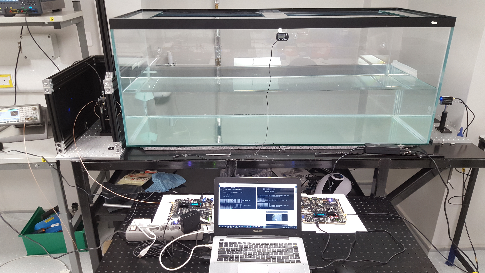
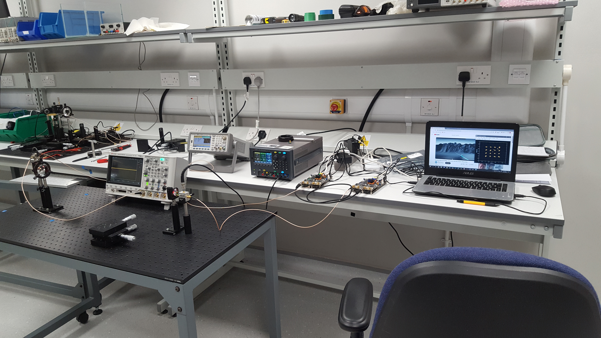
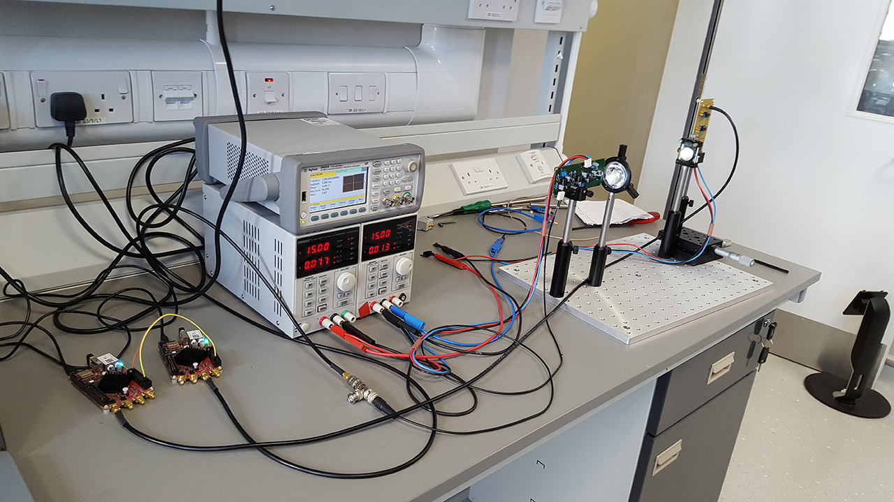
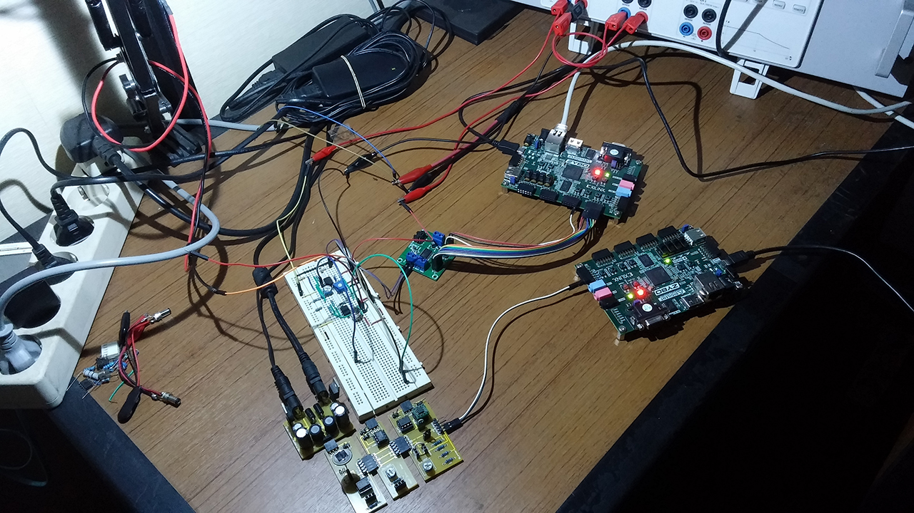
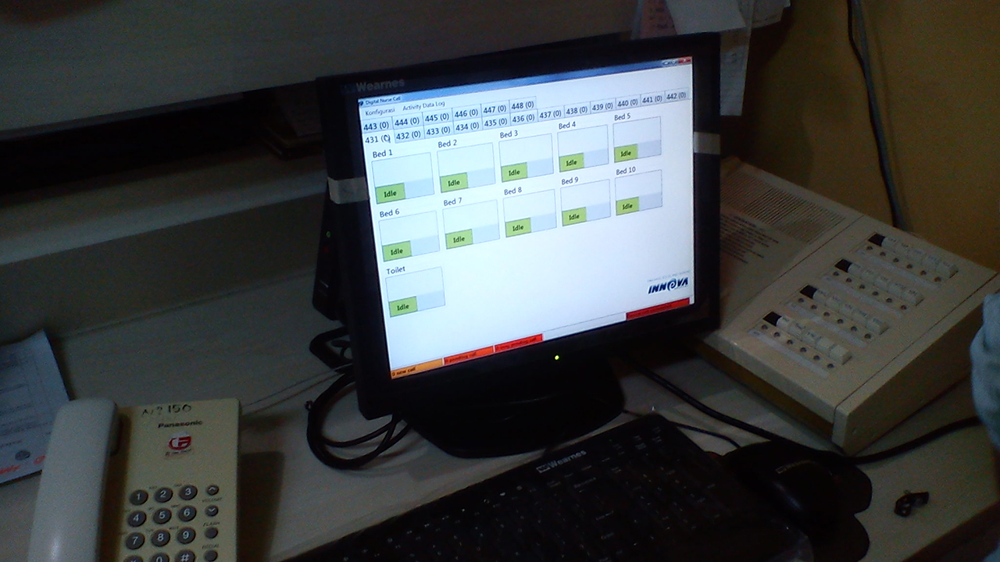
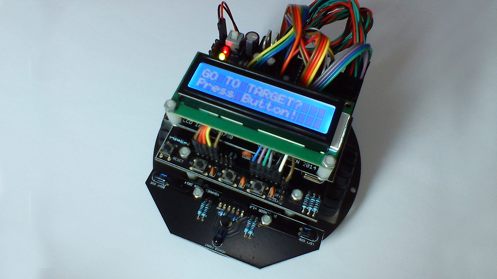

Erwin Setiawan, S.T., M.T.
🖥️ FPGA Engineer📧 erwin.setiawan789[at]gmail.com
🌏 weenslab.gitbook.io
GitHub • LinkedIn
Hi, my name's Erwin and I'm a senior FPGA/SoC engineer (5y+ experience). As well as programming FPGA/SoC I also have experience programming microcontroller and embedded Linux.
Experience
-
FPGA Engineer
Microelectronics Center ITB, Bandung, Indonesia
Nov 2017 - presentI designed OFDM-based baseband processor for LiFi (VLC) and RF transceiver system on FPGA. I also designed Linux kernel module/driver for OFDM PHY. I gained hands-on experience with ZYNQ FPGA, AXI4 bus, embedded Linux, Verilog, C/C++, MATLAB. I also gained hands-on experience with signal generator, oscilloscope, spectrum analyzer.
-
Research Intern
Institute for Digital Communications, The University of Edinburgh, U.K.
Jun 2019 (1 mo)The research intern is done in Li-Fi Research and Development Centre under the supervision of Dr. Wasiu O. Popoola. The research topic is about system integration between baseband processor and Li-Fi analog and optical front-end.
-
R&D Engineer
Inova Medika Solusindo, Bandung, Indonesia
Dec 2014 - Feb 2016 (1 yr. 2 mos)I designed a digital nurse call system for hospital and a clinical lab. instruments interfacing software. I gained hands-on experience with AVR, Arduino, ESP8266, Raspberry Pi, RS232, TCP/IP, C/C++, C#
Education
-
M.Sc in Electrical Engineering
Institut Teknologi Bandung
Jan 2017 - Jun 2018 (1 yr. 6 mos)
Thesis: Design of System-on-Chip for OFDM-based Visible Light Communication -
B.Eng in Computer Engineering
Maranatha Christian University
Aug 2011 - Aug 2014 (3 yr.)
Thesis: Maze Solving Robot using Flood Fill Algorithm
Publications
Journals
- E. Setiawan, T. Adiono, R. Mulyawan, N. Sutisna, I. Syafalni, and W. O. Popoola, “A Real-Time Baseband Processor for Li-Fi Internet Access,” Hindawi, Wireless Communications and Mobile Computing, vol. 2022, Nov 2022, DOI: 10.1155/2022/6154495.
- S. Fuada, E. Setiawan, T. Adiono, and W. O. Popoola, “Design and Verification of SoC for OFDM-based Visible Light Communication transceiver systems and integration with off-the-shelf analog front-end,” Optik, International Journal for Light and Electron Optics, vol. 258(1), May 2022, DOI: 10.1016/j.ijleo.2022.168867.
- E. Setiawan and T. Adiono, “Modelling the OFDM-Based PHY Layer in SoC for Visible Light Communication,” International Journal of Recent Contributions from Engineering, Science & IT (iJES), vol. 7(3), Sep 2019, DOI: 10.3991/ijes.v7i3.10695.
- E. Setiawan and T. Adiono, “Design of AXI4-Stream based Modulator IP Core for Visible Light Communication System-on-Chip,” Informatics, Telecommunication, and Electronics (INFOTEL), vol. 10(2), May 2018, DOI: 10.20895/infotel.v10i2.367.
- S. Tjiharjadi, M. C. Wijaya, and E. Setiawan, “Optimization Maze Robot using A* and Flood Fill Algorithm,” International Journal of Mechanical Engineering and Robotics Research (IJMERR), vol. 6(5), Sep 2017, DOI: 10.18178/ijmerr.6.5.366-372.
- S. Tjiharjadi and E. Setiawan, “Design and Implementation of a Path Finding Robot Using Flood Fill Algorithm,” International Journal of Mechanical Engineering and Robotics Research (IJMERR), vol. 5(3), Jul 2016, DOI: 10.18178/ijmerr.5.3.180-185.
Conference Proceedings
- T. Adiono, M. Jonathan, E. Setiawan, N. Sutisna, R. Mulyawan, and I. Syafalni, “A QoS Throughput Performance Measurement Comparison between UGS and BE Services of a Real-time FPGA Based OFDM Multi-user System Design Implementation,” in Proceedings of the 2023 Asia Pacific Signal and Information Processing Association Annual Summit and Conference (APSIPA ASC), Taiwan, Oct 2023.
- M. A. Ramadhan, G. H. Tanudjaja, E. Setiawan, T. Adiono, N. Sutisna, R. Mulyawan, and I. Syafalni, “Design and Implementation of a Pre-Equalizer for Visible Light Communication,” in Proceedings of the 2021 International Symposium on Intelligent Signal Processing and Communication Systems (ISPACS), Taiwan, Nov 2021.
- T. Adiono, M. Jonathan, E. Setiawan, N. Sutisna, R. Mulyawan, and I. Syafalni, “Performance Measurement of Real-time FPGA based OFDM System Implementation,” in Proceedings of The 8th International Conference on Electrical Engineering and Informatics (ICEEI), Malaysia, Oct 2021.
- E. Setiawan, T. Adiono, I. N. O. Osahon, and W. O. Popoola, “Experimental Demonstration of Visible Light Communication using White LED, Blue Filter and SoC based Test-Bed,” in Proceedings of the 4th International Symposium on Electronics and Smart Devices (ISESD), Indonesia, Oct 2019.
- E. Setiawan and T. Adiono, “Throughput Improvement of an Autocorrelation Block for Time Synchronization OFDM-based LiFi System using Pipeline Architecture,” in Proceedings of the 16th International SoC Design Conference (ISOCC), South Korea, Oct 2019.
- E. Setiawan, T. Adiono, and S. Fuada, “Demodulator IP Cores Design for OFDM-based Visible Light Communication System-on-Chip,” in Proceedings of the 3rd International Conference and Exhibition on Visible Light Communication (ICEVLC), South Korea, Mar 2019, pp. 54-57.
- E. Setiawan, T. Adiono, and S. Fuada, “PHY Layer Design of OFDM-VLC System based on SoC using Reuse Methodology,” in Proceedings of the 15th International SoC Design Conference (ISOCC), South Korea, Nov 2018, pp. 115-116.
- E. Setiawan and T. Adiono, “Implementation of Systolic Co-processor for Deep Neural Network Inference based on SoC,” in Proceedings of the 15th International SoC Design Conference (ISOCC), South Korea, Nov 2018, pp. 36-37.
- E. Setiawan, S. Fuada, and T. Adiono, “Experimental Demonstration of OFDM Visible Light Communications based on System-on-Chip,” in Proceedings of the 3rd International Symposium on Electronics and Smart Devices (ISESD), Indonesia, Oct 2018.
- T. Adiono, G. Meliolla, E. Setiawan, and S. Harimurti, “Design of Neural Network Architecture using Systolic Array Implemented in Verilog Code,” in Proceedings of the 3rd International Symposium on Electronics and Smart Devices (ISESD), Indonesia, Oct 2018.
- E. Setiawan, M. M. Latin, V. A. Mardiana, and T. Adiono, “Implementation of Baseband Transmitter Design based on QPSK Modulation on Zynq-7000 All-Programmable System-on-Chip,” in Proceedings of the 2nd International Symposium on Electronics and Smart Devices (ISESD), Indonesia, Oct 2017.
- E. Setiawan, M. M. Latin, and B. R. Alam, “Design and Simulation of Front-End Broadband RF Power Amplifier for LTE TDD 2.3 GHz,” in Proceedings of the 2nd International Symposium on Electronics and Smart Devices (ISESD), Indonesia, Oct 2017.
Projects
Underwater wireless optical communication (UWOC) OFDM baseband transceiver using FPGA RFSoC 4x2 (Microelectronics Center ITB's project):
Li-Fi OFDM baseband transceiver v3 using FPGA Eclypse Z7 (Microelectronics Center ITB's project):
RF OFDM baseband transceiver v1 using FPGA ADRV9361-Z7035 (Microelectronics Center ITB's project):

Li-Fi OFDM baseband transceiver v2 using FPGA Red Pitaya STEMlab 125-14 (Microelectronics Center ITB's project):
Li-Fi OFDM baseband transceiver v1 using FPGA Zybo (Master's Thesis):
Digital nurse call system using microncotroller ATmega328p (Inova Medika Solusindo's Project):
Maze solving robot using microncotroller ATmega644 (Undergraduate Thesis):
Tutorials
- Artificial Intelligence and IoT: Naive Bayes
- Easy FPGA and Embedded Linux on ZYBO
- Hands-On ESP8266: Mastering Basic Peripherals
- Hands-On IoT: Wi-Fi and Embedded Web Development
- Hands-On STM32: Basic Peripherals with HAL
- Hands-On ZYNQ: Mastering AXI4 Bus Protocol
- Pemrograman Arduino
- Pemrograman Zynq
- Project IoT: Kontrol LED dari Embedded Web
- STM32F103 SPL Tutorial
Skills
- FPGA design in Verilog
- Programming in C, Python, and MATLAB
- Hands-on skill with Arduino, Raspberry Pi, and Xilinx FPGA
- Hands-on skill with oscilloscope, signal generator, spectrum analyzer, etc.
- Document processing with HTML, Markdown, and LaTeX
A Little More About Me
Alongside my interests in computer technology, some of my other interests and hobbies are:
- Stock and cryptocurrency investing📈🚀. Kamu ini bangun pagi, mandi, pamit kerja, pake seragam, kaki dibungkus sepatu, berangkat pagi pulang malam, bayaran ga seberapa. Itu kerja apa dikerjain?✌🏻 - Bob Sadino
- Gaming. Life is free to play, but it's also pay to win💪🏻
Favorite Quotes
- "If you don't find a way to make money while you sleep, you will work until you die." - Warren Buffett
- "Why do I need all those expensive things? To impress people with less money than me?" - N. N.
- "Find joy in saving rather than in spending." - N. N.